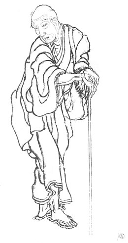

Hokusai
Katsushika Hokusai , est un peintre, dessinateur et graveur spécialiste de l’ukiyo-e, ainsi qu'auteur d'écrits populaires japonais surtout connu sous le nom de Hokusai (北斎?), ou son surnom de « Vieux Fou de dessin ».
Au cours de ses soixante-dix ans de carrière, il a réalisé une œuvre considérable de quelque 3 000 tirages couleur, des illustrations pour plus de 200 livres, des centaines de dessins et plus de 1 000 peintures. Il a rapidement abandonné le sujet étroit traditionnellement associé à l'école du «monde flottant» (ukiyo-e) dont il faisait partie, comme les images d'acteurs populaires et de courtisanes1.
Les Trente-six vues du mont Fuji (1831 – 1833) comptant en réalité 46 estampes dont La Grande Vague de Kanagawa (1831) sont ses œuvres les plus connues.
Son œuvre influença de nombreux artistes européens, en particulier Gauguin, Vincent van Gogh, Claude Monet et Alfred Sisley, et plus largement le mouvement artistique appelé japonisme.
La Grande Vague de Kanagawa
La Grande Vague de Kanagawa (神奈川沖浪裏, Kanagawa-oki nami-ura?, littéralement Sous la vague au large de Kanagawa), plus connue sous le nom de La Vague2, est une célèbre estampe japonaise du peintre japonais spécialiste de l'ukiyo-e, Hokusai, publiée en 18303 ou en 1831Note 1 pendant l'époque d'Edo.
Cette estampe est l'œuvre la plus connue de Hokusai et la première de sa fameuse série Trente-six vues du mont FujiNote 2, dans laquelle l'utilisation du bleu de Prusse renouvelait le langage de l'estampe japonaise. La composition de La Vague, synthèse de l'estampe japonaise traditionnelle et de la « perspective » occidentale, lui valut un succès immédiat au Japon, puis en Europe, où elle fut une des sources d'inspiration des impressionnistes.
Plusieurs musées en conservent des exemplaires, tels que le musée Guimet, le Metropolitan Museum of Art, le British Museum, ou encore la Bibliothèque nationale de France ; ils proviennent généralement des grandes collections privées d'estampes japonaises constituées au xixe siècle.

description:
Cette estampe est une estampe yoko-e, c'est-à-dire des images en présentation « paysage », donc disposées horizontalement, au format ōban5 ; elle mesure environ 26 cm de hauteur sur 38 cm de largeur.
Le paysage est composé de trois éléments : la mer agitée par la tempête, trois bateaux et une montagne. Il est complété par la signature nettement visible en haut et à gauche. Pour Alain Jaubert, dans son document Palettes, la composition comporte quatre plans : au premier plan une vague s'amorce sur la droite ; au deuxième plan, une vague plus grande s'élève, écumante; au troisième plan, une vague immense commence à déferler ; le mont sacré n'apparaît qu'en arrière-plan, comme élément central et décoratif, il est légèrement excentré vers la droite, enneigé il contraste avec un ciel d'horizon nuageux.
Historique de l'œuvre:
La Grande Vague de Kanagawa (神奈川沖浪裏, Kanagawa-oki nami-ura?, littéralement Sous la vague au large de Kanagawa), plus connue sous le nom de La Vague2, est une célèbre estampe japonaise du peintre japonais spécialiste de l'ukiyo-e, Hokusai, publiée en 18303 ou en 1831Note 1 pendant l'époque d'Edo.
Cette estampe est l'œuvre la plus connue de Hokusai et la première de sa fameuse série Trente-six vues du mont FujiNote 2, dans laquelle l'utilisation du bleu de Prusse renouvelait le langage de l'estampe japonaise. La composition de La Vague, synthèse de l'estampe japonaise traditionnelle et de la « perspective » occidentale, lui valut un succès immédiat au Japon, puis en Europe, où elle fut une des sources d'inspiration des impressionnistes.
Plusieurs musées en conservent des exemplaires, tels que le musée Guimet, le Metropolitan Museum of Art, le British Museum, ou encore la Bibliothèque nationale de France ; ils proviennent généralement des grandes collections privées d'estampes japonaises constituées au xixe siècle.